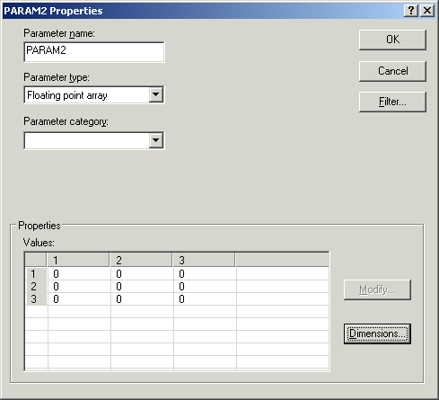

Matrix Parameter References
In the DeltaV system, a matrix parameter is defined as a two-dimensional floating point array parameter. Arrays can contain as many as 240 elements. Arrays are arranged in a [row][column] combination of up to 127 by 127 as long at the total number of elements does not exceed the 240 element maximum.
You cannot change the size of an array during runtime. Attempts to write to the .ROWS or .COLS fields of a matrix parameter are ignored.
The array parameter participates in redundancy only if the number of elements is 200 or less. If there are more than 200 elements, the parameter does not transfer across the controller redundancy link.
In batch expressions you can use array elements as values for step attributes, phase parameters, report parameters, recipe formula parameters, recipe step parameters, and unit parameters.
Define a matrix by specifying Floating point array when defining an output parameter.

Properties of an Output Parameter Configured as a 3 by 3 Floating Point Array
Access array elements by extending the database reference with indices. There are two ways to do this:
'array'[row][column]
In this form the array index references (row and column) are outside of the single quotes. The row and column specifiers can be variables or expressions. This form returns the default field (.CV) value of an array element. The index values are checked against the matrix definition.
For example:
'ARRAY1'[MY_INDEX][2*abs(a)]The row index value is a variable and the column index variable value is an expression.
'array[row][column].field'
In this form the entire array reference is enclosed in single quotes and field is required. In this form row and column specifiers must be integer constants. The index values are checked against the index dimensions. You must use this form to access fields other than CV.
For example:
'ARRAY1[2][3].AWST'
Matrix Parameter indices start at 1 but an index of 0 (zero) is interpreted as 1. For example, an index of [0][0] is interpreted as [1][1].
Use either of these forms to access array elements in expressions. Note that you must enter array indexes manually in the expression editor.
To add and display historical array parameters, the syntax must be entered as follows:
'Module/reference[2][1].CV'
To display and use the array parameter in DeltaV Operate, reference the array on the graphic as follows:
'DVSYS.Module/reference[2][1].F_CV'
The DeltaV system updates array parameter values in the workstations every 10 seconds. Array values that change more frequently than 10 seconds cannot all be properly displayed at the workstations.
When using matrix parameter referencing and the array resides in a different controller from the module writing to it, create the logic (in the module) to confirm each array element write before attempting the next array element write. Confirmation is not needed if the array and module both reside in the same controller.